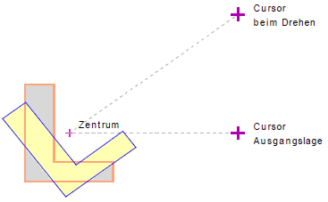

")
Die markierten Elemente werden frei platziert. Dreh- und Spiegelachse können angegeben werden.
Wenn Maßkettenelemente in der Auswahl enthalten sind, ist die Aktion nach Eingabe des Drehwinkels beendet.
1.Elemente markieren
§Ziehen Sie einen Rahmen durch das Anklicken von zwei Punkten um die zu kopierenden Zeichenelemente oder klicken Sie einzelne Elemente an. [1.Punkt/Element]; [2.Punkt].
-Die Zeichenelemente werden markiert.
-Um Elemente wieder abzuwählen, klicken Sie im unteren Funktionsbereich auf Entfer. Ziehen Sie einen Rahmen um die entsprechenden Elemente oder klicken Sie einzelne Elemente an. Bei gedrückter Umschalttaste (Shift) wird automatisch der Entfer-Modus aktiviert – am Cursor wird ein Minuszeichen eingeblendet.
§Bestätigen Sie die Auswahl mit Rechtsklick.
Die zu kopierenden Elemente werden an den Cursor gehängt.
2.Elemente verschieben, ausrichten und platzieren
Der Cursor befindet sich während des Verschiebens im geometrischen Zentrum. Um die Zeichnung orthogonal zum Systemwinkel zu verschieben, schalten Sie im Funktionsbereich die Funktion [Or an] ein. Alternativ: Halten Sie die Umschalttaste (Shift) gedrückt, um den Orthogonalmodus zu aktivieren.
§Verschieben Sie die Teilzeichnung an die gewünschte Stelle und legen Sie die Zeichnung mit Linksklick ab. [Verschieben].
§Geben Sie einen Wert für die Drehung ein und bestätigen mit der Eingabetaste. [Drehwinkel].
Die ursprüngliche Lage der Teilzeichnung wird um den eingegebenen Wert gedreht. Mit einem weiteren Klick können Sie die Teilzeichnung erneut verschieben und neu ausrichten.
Alternativ:
§Drehen Sie die Teilzeichnung frei um das Zentrum und klicken Sie die linke Maustaste, wenn die gewünschte Ausrichtung erreicht worden ist.
§Um das Verschieben abzuschließen, klicken Sie auf  .
.
Die kopierten Zeichenelemente werden platziert.

Zugehörige Referenzen: